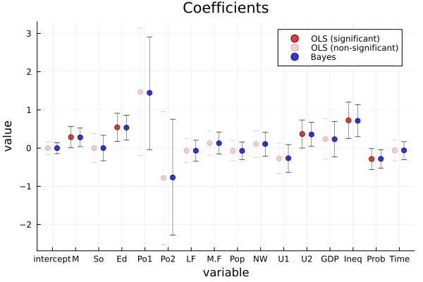
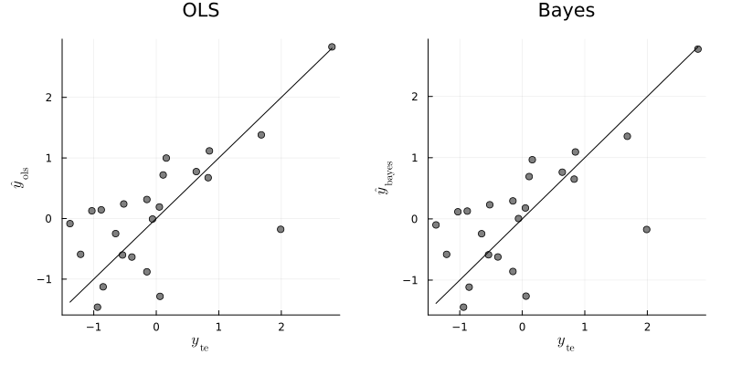
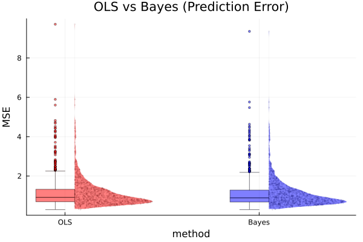

Exercise 9.3 Solution Example - Hoff, A First Course in Bayesian Statistical Methods
標準ベイズ統計学 演習問題 9.3 解答例
a)
Answer
The result of bayesian regression using the g-prior is shown below:
crime_src = readdlm("../../Exercises/crime.dat", header=true)
crime = crime_src[1]
header = crime_src[2] |> vec
df = DataFrame(crime, header)
using GLM
function ResidualSE(y,X)
fit = lm(X, y)
return sum(map(x -> x^2, residuals(fit))) / (size(X, 1) - size(X, 2))
end
function lmGprior(y, X; g=length(y), ν₀=1, σ₀²=ResidualSE(y,X), S=1000)
n, p = size(X)
Hg = (g/(g+1)) * X * inv(X'X) * X'
SSRg = y' * (diagm(ones(n)) - Hg) * y
σ² = 1 ./ rand(Gamma((ν₀+n)/2, 2/(ν₀*σ₀²+SSRg)), S)
Vb = g * inv(X'X) /(g+1)
Eb = Vb * X' * y
β = Matrix{Float64}(undef, 0, p)
for i in 1:S
s = σ²[i]
β = vcat(β, rand(MvNormal(Eb, Symmetric(s * Vb)))')
end
return β, σ²
end
# set prior parameters
n = size(df, 1)
g = n
ν₀ = 2
σ₀² = 1
y = df[:, :y]
X = select(df, Not(:y)) |> Matrix
X = [ones(size(X, 1)) X] # add intercept
p = size(X, 2)
S=5000
BETA, SIGMA² = lmGprior(y, X; g=g, ν₀=ν₀, σ₀²=σ₀², S=S)
# posterior mean for β
β̂_gprior = mean(BETA, dims=1) |> vec
# posterior confidence intervals for β
ci_gprior = map(x -> quantile(x, [0.025, 0.975]), eachcol(BETA))
# store results
coef_name = names(df[:, Not(:y)]) |> vec
coef_name = ["intercept", coef_name...]
result_gprior = DataFrame(
param = coef_name,
β̂ = β̂_gprior,
ci_lower = map(x -> x[1], ci_gprior),
ci_upper = map(x -> x[2], ci_gprior)
)
@transform!(result_gprior, :ci_length = :ci_upper - :ci_lower)
end
:RESULTS:
16×5 DataFrame
Row │ param β̂ ci_lower ci_upper ci_length
│ String Float64 Float64 Float64 Float64
─────┼────────────────────────────────────────────────────────────
1 │ intercept -0.00138411 -0.145485 0.141785 0.28727
2 │ M 0.280085 0.0326016 0.522226 0.489625
3 │ So 0.000124904 -0.335994 0.326097 0.662091
4 │ Ed 0.531345 0.213679 0.848809 0.63513
5 │ Po1 1.4448 0.0578835 2.9098 2.85191
6 │ Po2 -0.769673 -2.28756 0.708661 2.99622
7 │ LF -0.0649535 -0.345494 0.201018 0.546512
8 │ M.F 0.128508 -0.147925 0.402133 0.550058
9 │ Pop -0.0704276 -0.301267 0.153849 0.455116
10 │ NW 0.105647 -0.200629 0.416185 0.616814
11 │ U1 -0.265548 -0.631514 0.103081 0.734594
12 │ U2 0.359167 0.0283685 0.688258 0.659889
13 │ GDP 0.239074 -0.213783 0.692641 0.906425
14 │ Ineq 0.715697 0.299354 1.13272 0.83337
15 │ Prob -0.27993 -0.527327 -0.0344898 0.492837
16 │ Time -0.0602993 -0.288748 0.181236 0.469984
The result of least square estimation is shown below:
# least square estimates
olsfit = lm(X, y)
tstat = coef(olsfit) ./ stderror(olsfit)
pval = 2 * (1 .- cdf.(Normal(), abs.(tstat)))
result_ols = DataFrame(
param = coef_name,
β̂ = coef(olsfit),
pvalue = pval,
ci_lower = confint(olsfit)[:, 1],
ci_upper = confint(olsfit)[:, 2]
)
@transform!(result_ols, :ci_length = :ci_upper - :ci_lower)
16×6 DataFrame
Row │ param β̂ pvalue ci_lower ci_upper ci_length
│ String Float64 Float64 Float64 Float64 Float64
─────┼─────────────────────────────────────────────────────────────────────────
1 │ intercept -0.000458109 0.995369 -0.161444 0.160527 0.321971
2 │ M 0.286518 0.0348684 0.00955607 0.56348 0.553924
3 │ So -0.000114046 0.999506 -0.375493 0.375265 0.750757
4 │ Ed 0.544514 0.00243231 0.178196 0.910832 0.732636
5 │ Po1 1.47162 0.0715397 -0.193934 3.13718 3.33111
6 │ Po2 -0.78178 0.358608 -2.51862 0.955056 3.47367
7 │ LF -0.0659646 0.667281 -0.378923 0.246994 0.625917
8 │ M.F 0.131298 0.397494 -0.185192 0.447788 0.63298
9 │ Pop -0.0702919 0.579692 -0.329144 0.18856 0.517704
10 │ NW 0.109057 0.525852 -0.241574 0.459687 0.701261
11 │ U1 -0.270536 0.168865 -0.671568 0.130495 0.802063
12 │ U2 0.36873 0.0403534 0.00190637 0.735554 0.733648
13 │ GDP 0.238059 0.357931 -0.290079 0.766198 1.05628
14 │ Ineq 0.726292 0.00192334 0.24874 1.20384 0.955105
15 │ Prob -0.285226 0.033017 -0.558095 -0.0123574 0.545738
16 │ Time -0.0615769 0.638379 -0.328802 0.205648 0.534451

The point estimates and 95% confidence/credible intervals are very similar between bayesian regression and least square estimation. The lengths of the intervals seem to be shorter in bayesian regression than in least square estimation. Seeing the results of bayesian regression, the 95% credible intervals of coefficients of M, Ed, Po1, U2, Ineq and Prob do not include 0, so these variables seem strongly predictive of crime rates. On the other hand, the results of least square estimation show that the p-values of M, Ed, U2 and Ineq are less than 0.05, so these variables seem strongly predictive of crime rates. Using these types of criteria, the difference between the two results is that Po1 and Prob are predictive of crime rates in bayesian regression, but not in least square estimation.
b)
Answer
# split data into training and test set
Random.seed!(1234)
i_te = sample(1:n, div(n, 2), replace=false)
i_tr = setdiff(1:n, i_te)
y_tr = y[i_tr]
y_te = y[i_te]
X_tr = X[i_tr, :]
X_te = X[i_te, :]
# OLS
olsfit = lm(X_tr, y_tr)
β̂_ols = coef(olsfit)
ŷ_ols = X_te * β̂_ols
error_ols = mean((y_te - ŷ_ols).^2)
:RESULTS:
0.6155918321208247
# Bayesian
BETA, SIGMA² = lmGprior(y_tr, X_tr; g=g, ν₀=ν₀, σ₀²=σ₀², S=S)
β̂_bayes = mean(BETA, dims=1) |> vec
ŷ_bayes = X_te * β̂_bayes
error_bayes = mean((y_te - ŷ_bayes).^2)
:RESULTS:
0.6012597112455574

From the above results, the least square regression and bayesian regression seem to yield very similar predictions for the test data. For this time, the bayesian regression predict better than the least square regression, but the gap is very small.
c)
Answer
function computeMses(y, X; g=g, ν₀=ν₀, σ₀²=σ₀², S=S)
# split data into training and test set
y_tr, y_te, X_tr, X_te = splitData(y, X)
# OLS
olsfit = lm(X_tr, y_tr)
β̂_ols = coef(olsfit)
ŷ_ols = X_te * β̂_ols
error_ols = mean((y_te - ŷ_ols).^2)
# Bayesian
BETA, SIGMA² = lmGprior(y_tr, X_tr; g=g, ν₀=ν₀, σ₀²=σ₀², S=S)
β̂_bayes = mean(BETA, dims=1) |> vec
ŷ_bayes = X_te * β̂_bayes
error_bayes = mean((y_te - ŷ_bayes).^2)
return error_ols, error_bayes
end
# compute MSEs
n_sim = 1000
error_ols = zeros(n_sim)
error_bayes = zeros(n_sim)
for i in 1:n_sim
error_ols[i], error_bayes[i] = computeMses(y, X)
end
# average MSEs
mean(error_ols), mean(error_bayes)
:RESULTS:
(1.12446194924989, 1.092206057122776)
